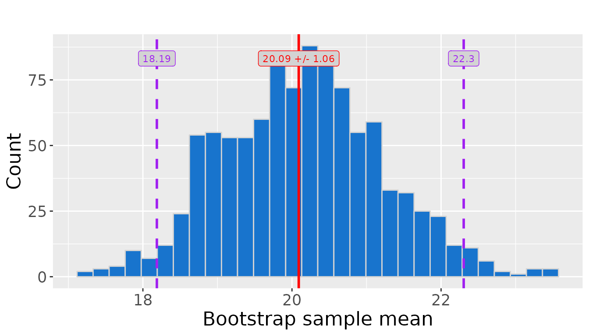
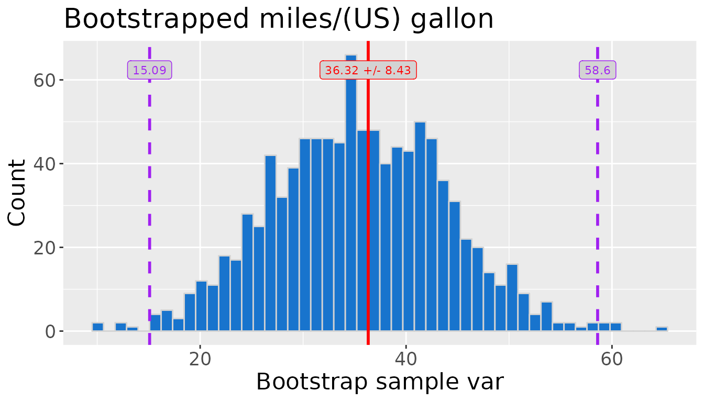

How to use strapvizr
Julien Gordon, Gautham Pughazhendhi, Zack Tang, and Margot Vore
my-vignette.Rmdstrapvizr is a package for performing bootstrapping of a sample to produce plots and statistics for use in final reports and documents. This notebook shows how you can utilize the strapvizr package within a project.
Example data
We will be using the toy dataset mtcars to demonstrate the usage. This dataset was extracted from the 1974 Motor Trend US magazine, and comprises fuel consumption and 10 aspects of automobile design and performance for 32 automobiles. We will only use the feature mpg for demonstration purpose.
ex_data <- mtcars |>
dplyr::pull(mpg)
ex_data
#> [1] 21.0 21.0 22.8 21.4 18.7 18.1 14.3 24.4 22.8 19.2 17.8 16.4 17.3 15.2 10.4
#> [16] 10.4 14.7 32.4 30.4 33.9 21.5 15.5 15.2 13.3 19.2 27.3 26.0 30.4 15.8 19.7
#> [31] 15.0 21.41. Bootstrap
There are two functions in the bootstrap module, bootstrapand calculate_boot_stats. These two functions perform the bootstrapping and calculate the relevant statistics.
1.1 bootstrap_distribution
Functionality
This function performs the bootstrap and returns a numeric vector as the result.
Function inputs
- sample: the data that will be bootstrapped
- rep: the number of repetitions of bootstrapping
- this controls the size of the outputted list
- n: number of samples in each bootstrap
- default is
autowhich means the distribution will be the same size as the original sample
- default is
- estimator: what sample statistic we are calculating with the bootstrap
- mean, median, var (i.e. variance), or sd (i.e. standard deviation)
- seed: we can set this for reproducibility
# returns 50 sample means via bootstrapping
boot_1 <- strapvizr::bootstrap(ex_data, 50, seed = 123)
boot_1
#> [1] 21.52812 19.50000 19.46875 18.85312 18.99687 18.74375 20.59688 19.81875
#> [9] 20.26250 20.88437 19.60000 19.72500 19.15000 20.20625 21.34062 20.35938
#> [17] 20.69063 20.47500 18.85625 20.17188 20.15312 20.68437 19.60000 19.59062
#> [25] 21.25000 19.25000 21.60625 17.84375 19.24375 19.91875 19.06250 20.48750
#> [33] 22.01875 20.99375 20.95625 18.77500 20.17813 20.32812 19.53750 18.30000
#> [41] 20.22500 20.03438 20.25937 18.51250 17.24063 18.73750 21.01562 20.47500
#> [49] 19.08125 20.98438
# returns 75 sample means via bootstrapping
boot_2 <- strapvizr::bootstrap(ex_data, 75, estimator = var, seed = 123)
boot_2
#> [1] 35.26983 21.95806 42.53641 27.06838 35.76225 27.17351 54.29193 19.54028
#> [9] 37.12177 33.39233 22.11355 31.43548 27.18000 31.72706 45.80830 46.92249
#> [17] 39.34346 34.65613 57.09028 33.76402 45.89676 36.70330 29.51290 23.16539
#> [25] 35.61871 29.83419 32.41673 31.60770 21.91867 32.56093 32.86113 32.52952
#> [33] 48.81641 29.91996 41.72060 30.70645 38.43983 43.50144 29.70629 24.92774
#> [41] 37.28839 39.27265 38.86314 32.01210 28.27475 30.57597 39.18007 35.35032
#> [49] 31.56157 44.05104 48.08652 31.73931 46.50612 32.02338 28.76383 37.02902
#> [57] 19.41097 20.64435 35.85419 25.32507 27.29802 28.75770 35.70516 39.93419
#> [65] 25.31996 37.39378 28.31290 37.38370 41.52996 26.77403 40.17835 37.43613
#> [73] 44.03790 30.76048 42.330311.2 calculate_boot_stats
Functionality
This function performs bootstrapping and returns a named list of the sampling distribution statistics.
Function inputs
- sample : the data that will be bootstrapped
- rep : the number of repetitions of bootstrapping
- this controls the size of the outputted list
- n : number of samples in each bootstrap
- default is auto which means the distribution will be the same size as the original sample
- level : the significance level of interest for the sampling distribution
- a value between 0 and 1
- estimator : what sample statistic we are calculating with the bootstrap
- mean, median, var (i.e. variance), or sd (i.e. standard deviation)
- seed : we can set this for reproducibility
- pass_dist : specifies if the sampling distribution is returned from the function
# Get 100 sample means via bootstrapping and calculate statistics at the
#95% confidence interval
stat_list_1 <- strapvizr::calculate_boot_stats(ex_data, 100, level = 0.95,
seed = 123)
stat_list_1
#> $lower
#> 2.5%
#> 18.15633
#>
#> $upper
#> 97.5%
#> 21.65055
#>
#> $sample_mean
#> [1] 20.09062
#>
#> $std_err
#> [1] 0.9807826
#>
#> $level
#> [1] 0.95
#>
#> $sample_size
#> [1] 32
#>
#> $n
#> [1] "auto"
#>
#> $rep
#> [1] 100
#>
#> $estimator
#> [1] "mean"
# Get 50 sample variances via bootstrapping at a 90% confidence level
# and return the bootstrap distribution along with the statistics
stat_list_2 <- strapvizr::calculate_boot_stats(ex_data, 50, level = 0.90,
seed = 123, estimator = "var",
pass_dist = TRUE)
stat_list_2
#> $lower
#> 5%
#> 22.02803
#>
#> $upper
#> 95%
#> 47.96415
#>
#> $sample_var
#> [1] 36.3241
#>
#> $std_err
#> [1] 8.111998
#>
#> $level
#> [1] 0.9
#>
#> $sample_size
#> [1] 32
#>
#> $n
#> [1] "auto"
#>
#> $rep
#> [1] 50
#>
#> $estimator
#> [1] "var"
#>
#> $dist
#> [1] 35.26983 21.95806 42.53641 27.06838 35.76225 27.17351 54.29193 19.54028
#> [9] 37.12177 33.39233 22.11355 31.43548 27.18000 31.72706 45.80830 46.92249
#> [17] 39.34346 34.65613 57.09028 33.76402 45.89676 36.70330 29.51290 23.16539
#> [25] 35.61871 29.83419 32.41673 31.60770 21.91867 32.56093 32.86113 32.52952
#> [33] 48.81641 29.91996 41.72060 30.70645 38.43983 43.50144 29.70629 24.92774
#> [41] 37.28839 39.27265 38.86314 32.01210 28.27475 30.57597 39.18007 35.35032
#> [49] 31.56157 44.051042. Display
There are two functions in the display module, plot_ci and tabulate_stats. These use the bootstrapping statistics to create report-ready visualizations and tables of the sampling distribution.
2.1 plot_ci
Functionality
This function creates a histogram of a sampling distribution with its confidence interval and sample mean
Function Inputs
- sample : the data that will be bootstrapped
- rep : the number of repetitions of bootstrapping
- bin_size : the number of bins data will be split into for the histogram
- estimator: the sampling distribution estimator
- mean, median, var (i.e. variance), or sd (i.e. standard deviation)
- n : number of samples in each bootstrap
- default is auto which means the distribution will be the same size as the original sample
- level : the significance level of interest for the sampling distribution
- value between 0 and 1
- seed : we can set this for reproducibility
- title : title of the histogram
- y_axis : name of the y axis
- path: path to where function should be saved
- default is NULL which means the plot will not be saved
# Plot sampling distibution of 1000 sample means at a 95% confidence interval
plot_1 <- strapvizr::plot_ci(ex_data, rep = 1000, level = 0.95, seed = 123)
plot_1
# Plot sampling distibution of 1000 sample means at a 99% confidence interval
# with a unique title and a bin size of 50
title <- "Bootstrapped miles/(US) gallon"
plot_2 <- strapvizr::plot_ci(ex_data, rep = 1000, bin_size = 50, level = 0.99,
title = title, seed = 123, estimator = "var")
plot_2
class(plot_2)
#> [1] "gg" "ggplot"2.2 tabulate_stats
Functionality
This function creates a list of two tibble objects that summarize the sampling distribution and the parameters for creating the bootstrapped samples and saves them as latex files.
Function Inputs
- stat_list : summary statistics produced by the
calculate_boot_stats()function - precision : the precision of the table values
- how many decimal places are shown
- path : can specify a folder path where you want to save the tables
- default is NULL which means the tables will not be saved
stat <- calculate_boot_stats(ex_data, 1000, level = 0.95, seed = 123)
result <- strapvizr::tabulate_stats(stat, precision = 2)
stats_table <- result[[1]] # stats table
parameters_table <- result[[2]] # parameter table
stats_table
#> # A tibble: 1 × 4
#> `Sample Mean` `Lower Bound CI` `Upper Bound CI` `Standard Error`
#> <dbl> <dbl> <dbl> <dbl>
#> 1 20.1 18.2 22.3 1.06
parameters_table
#> # A tibble: 1 × 3
#> `Sample Size` Repetitons `Significance Level`
#> <int> <dbl> <dbl>
#> 1 32 1000 0.05